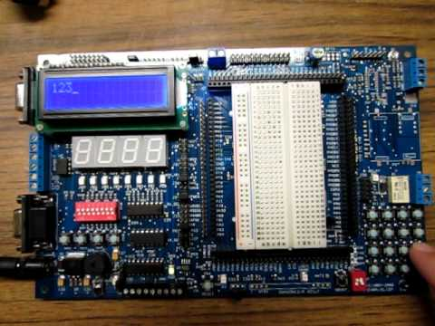

Our engineering capstone project, U-TRACKR, provides real-time navigation for UAVs using photogrammetry and image processing.
I created, simulated, and fine-tuned an operational amplifier using Cadence EDA. I designed the opamp to meet specifications which include the following: DC power supply, total DC current drawn from power supply, load, gain, unity gain bandwidth, slew rate, phase margin, input common mode range, and output swing.
For our energy systems project, my group designed the K1 campus feeder and modelled the entire campus power system using the Siemens PSS/E software. I performed power flow analysis and designed cables to plan for load growth. I also investigated effects of loading condition and power factor on the system. Finally, I designed shunt capacitors to improve the power factor.
Electrocardiogram
I rapidly prototyped a working electrocardiogram (ECG) circuitry and tested it on a subject. My partner and I reviewed the basics of amplifiers and investigated how the potential difference (voltage) between strategically placed surface electrodes can be used to study the human body.
For my embedded systems course, my partner and I built and programmed a heat-sensing device prototype capable of measuring the precise temperature of the environment. Our project's components include the BeagleBone Black microcontroller, a precision semiconductor temperature sensor LM35DZ, a potentiometer, an LCD Display, a breadboard and wires.

My partner and I created a tic-tac-toe game which fits on a 1.5 X 1.5 mm MOSIS “TinyChip”. We tested the simulation using Verilog and designed the schematics and layout using the Cadence and Synopsys EDA software.
For one of my VLSI projects, I designed a 12-bit fast adder with a low energy-delay product.
Traffic Simulation on Altera FPGA
I successfully programmed the Altera FPGA in C in order to perform traffic light simulations.
Dragon12 Board Calculator
I programmed the HCS12 MCU and Dragon12 development board in VHDL and Verilog and ran the program using the CodeWarrior software.
Mobile Phone Charger
My partner and I designed a bridge rectifier circuit on a breadboard which converts 110V AC to 5V DC/5A.
We built a vehicle that completes a 4 m2 obstacle course three times. The obstacle course tested our robot’s speed, durability, precision, and power. I successfully programmed our robot to turn left or right, go uphill or downhill, make a U-turn or recover from collisions using sensors. I created the 3D models using CAD software and proposed a bill of materials. I led the team as project manager and assigned tasks to team members. Moreover, I created and documented different robot designs, and ran the tests to find the most viable design. In addition, I designed the vex robot to function autonomously as well as via remote control. Our group prepared a 30-page report showcasing the design and functions of the final model.